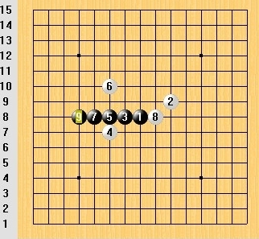

占地为王
占地为王o(^_^)o 经过数星期休养生息，总算回点精神啦，继续忙碌而幸福的工作！
一，我曾是只"虫"
一般我们用"菜鸟"来形容初学的玩家，而"菜鸟"们唯一砍得动的，就是"菜虫"啦！高3充满压力的读书生活更积极有效迅速地促进了各种休闲娱乐活动的发展。比如，前桌的小女孩又找我下五子棋来啦，事实上她是来寻找自信的，悲剧的是我却浑然不知。以下是对局谱，我持白。

不知道是为了报仇，还是为了自强，就这么莫名其妙误入棋途2000天。
后来有次同学会，我们夸她五子棋下得好，6年前就砍过专业棋手N盘！
有人问我练棋是否很辛苦，一天要练多少小时才能如何如何云云~~ 把我问得一头雾水+目瞪口呆！在我的记忆里，五子棋只给我留下快乐与幸福，还结下不少真挚的友谊！至于刻苦的修炼~~~ 嗯嗯~~ 应该有这么回事吧，总之跟着感觉走，不知不觉就这样了，怎么说呢，俗话不是说无心插柳柳成荫吗！
二，五林秘籍
我似乎无法说服所有的人（废话）~~ 对部分人而言，技巧、方法、秘籍、必杀技更应该成为通往高手之路的理由。当然我也不否认这些东西的存在，我也确实掌握一些小技巧，但这些技巧并非源于课本or教条，更多来自快乐过程中自行生成的能力。在跟棋友的交流中，我也感受到他们特殊的能力与天赋，只是他们也是自己积累而成，从没听说他们翻山越岭去找啥“五林秘籍”。
然而不同人形成的能力不尽相同，从他们写的文字就能发现，有人强调棋理，有人强调计算，有人强调棋型，有人强调心理。so，copy忍者卡卡西就由我来当啦。这里做个小整理，仅供参考。
注意：这里概括4种比较常见常用的技巧类型，但并非全部。
三，技术研讨会
主持人：应广大五子棋爱好者要求，现召开技术研讨会，探讨五子棋提高的诀窍，希望各位大师各数己见，踊跃发言。谢谢！
棋理学派：没问题！
计算学派：同意！
棋型学派：支持！
心理学派：顶！
观众：鼓掌（兴奋）
主持人：请各位大师向观众朋友们自我介绍下。
棋理学派：万物皆规律，五子棋也不例外。无论任何局面，必胜必败优劣，最强着法等等，全部都是客观存在的，不以人的意识为转移，违背规律者必将受到规律的惩罚！因此我们认为要深入学习五子棋的客观规律，掌握五子棋的本质，最终达到五子棋的至高境界！
计算学派：与其他棋种比起来，五子棋最最强调的就是计算力。因为五子棋是一子定输赢，一旦攻崩往往意味着必败，防错漏防漏杀等等全部都要付出惨痛的代价。要解决这一切问题的唯一关键就是~~~~~（拖长音）计算力！！
棋形学派：棋形学派又称五子棋美学，一个好的棋形可以走向必胜，同样一个糟糕的棋形将断送前程。大家应当增强对各种进攻或防守棋形的敏感，培养五子棋形状的美感！其实五子棋并不缺少美，而是缺少发现！
心理学派：兵者，诡道也，尔虞我诈也！两军交战硬碰硬的都是**白痴，真正的战斗应该是欺诈反欺诈，引诱反引诱，忽悠反忽悠。五子棋亦是如此，坑蒙拐骗，放饵下套，连哄带骗，即便言行举止也要做到若有若无、似是而非，虚虚实实假假真真！最终达到“欲先忽悠别人，必先忽悠自己”的至高境界！
观众~~ 呆~~ 一头雾水！
主持人（呆~）：那~~ 各位大师觉得五子棋的提高，最关键的是什么？
棋理学派：提高对棋理的本质认识！
计算学派：提高计算力，深广精一个都不能
我靠，沙发都能被我抢到。。。我太强大了。。。
困老。。。留着明天看老。。。
图都挂了吧
棋形+心理路过支持


支持，路过
支持
思考时间充分，棋理派占优势吧！时间仓促，心理派有利吧！
像我等不入流的，没门没派吧！
占地为王
 写的真好。。。学习。可惜了。俺啥派不是！！
写的真好。。。学习。可惜了。俺啥派不是！！ 我顶。
我顶。额 看起来挺复杂的额= =